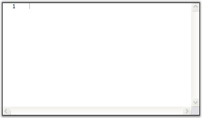

Users can add an EditControl to a WPF application by following the below steps.
1. Create a new WPF Application in Visual Studio 2008 or Visual Studio 2010.
For example, open Visual Studio and select the File menu, pointing to New Project and click WPF Application.
2. Drag the Edit control from the Syncfusion tab in the Toolbox.
 Note: If the
Edit control is not listed in the toolbox, add it manually from the
Syncfusion.Edit.Wpf assembly. The Syncfusion.Edit.Wpf assembly has to be added
also to the project References folder.
Note: If the
Edit control is not listed in the toolbox, add it manually from the
Syncfusion.Edit.Wpf assembly. The Syncfusion.Edit.Wpf assembly has to be added
also to the project References folder.
Add an EditControl manually to a WPF application, by using the following code.
|
XAML <syncfusion:EditControl x:Name="editControl1"/> |
|
C# EditControl editControl = new EditControl(); |
3. Properties for Edit Control can be set using the smart tag in the designer or property window or using XAML or procedural code.
4. Build and run the application

Figure 5: EditControl